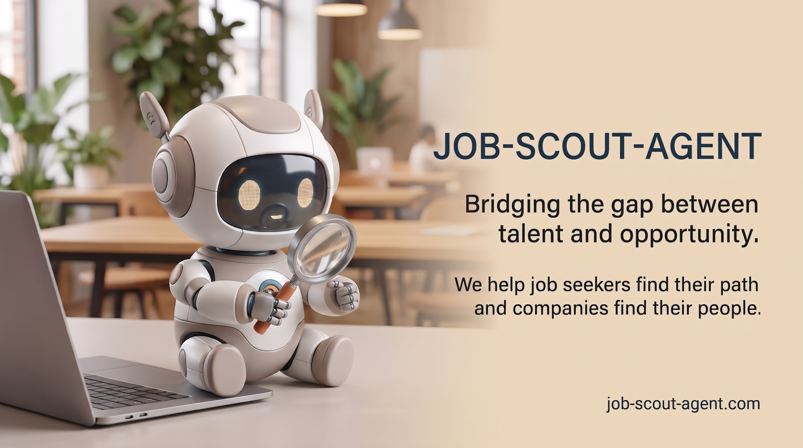

Today
I build reliable software, test automation infrastructure and AI-powered applications, hands-on with Claude and Google Gemini.
Projects
 AI Agent Security TestingAdversarial evals for an AI voice agent. Python, DeepEval, pytest
AI Agent Security TestingAdversarial evals for an AI voice agent. Python, DeepEval, pytest Job Scout RAG OverlayAn AI job-search assistant: discovery, matching, skill gaps, tailored resumes. Python, React, Cloudflare Workers
Job Scout RAG OverlayAn AI job-search assistant: discovery, matching, skill gaps, tailored resumes. Python, React, Cloudflare Workers
Job Scout AgentFinds open roles that fit your CV. Claude API, GitHub Actions Playwright Automation FrameworkA test suite built from scratch for Uptic Hospitality. TypeScript, Playwright, axe-core
Playwright Automation FrameworkA test suite built from scratch for Uptic Hospitality. TypeScript, Playwright, axe-core
More on GitHub
Certificates
Writing
- Building a smarter AI development stack: ECC + OmniRoutePrivate, code required.
- The journey to your dream jobDefine it, find it, show them.
- Cutting through the AI agent noiseHermes Agent, ECC, oh-my-claudecode and Arena compared.
- How I test with Claude CodeFaster, cheaper testing with ECC and oh-my-claudecode.
- Two kinds of QALearned before AI, and learned with it.
- 5 resume improvementsCopy-ready AI prompts, in less than 5 minutes.